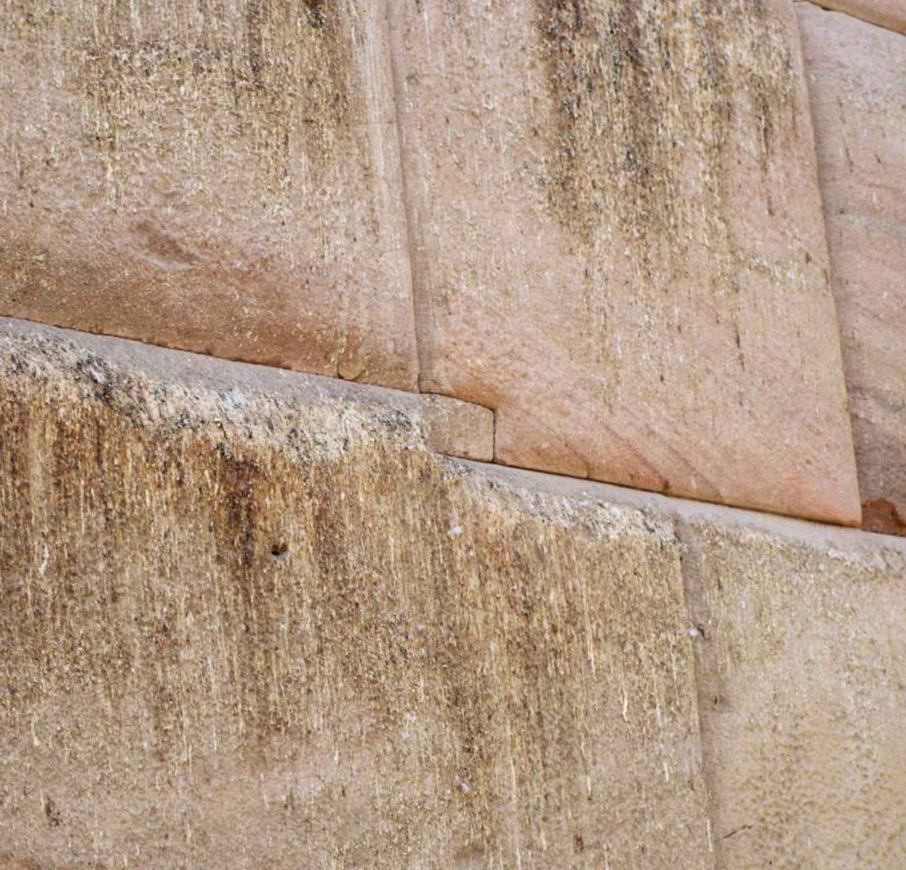
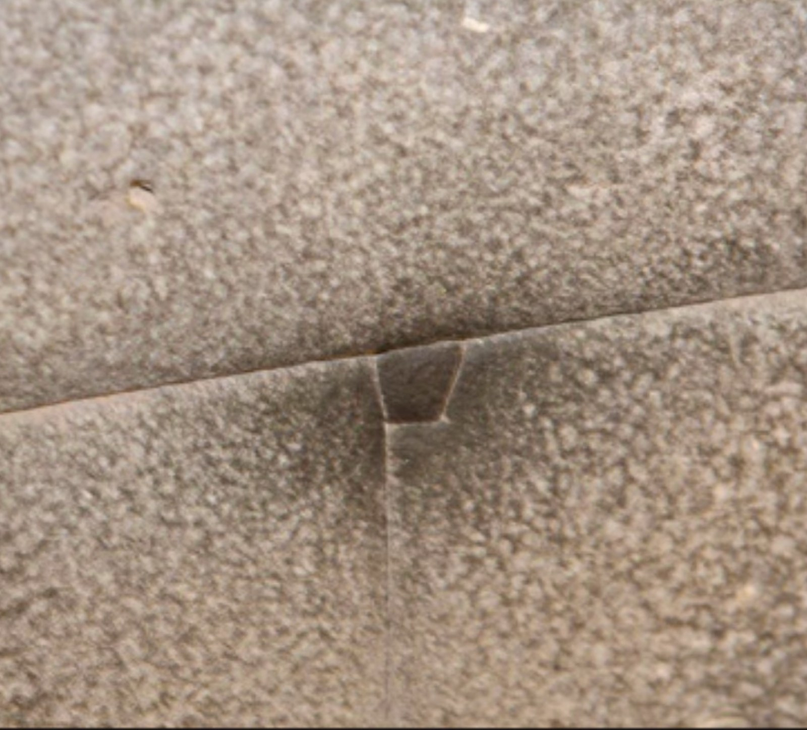
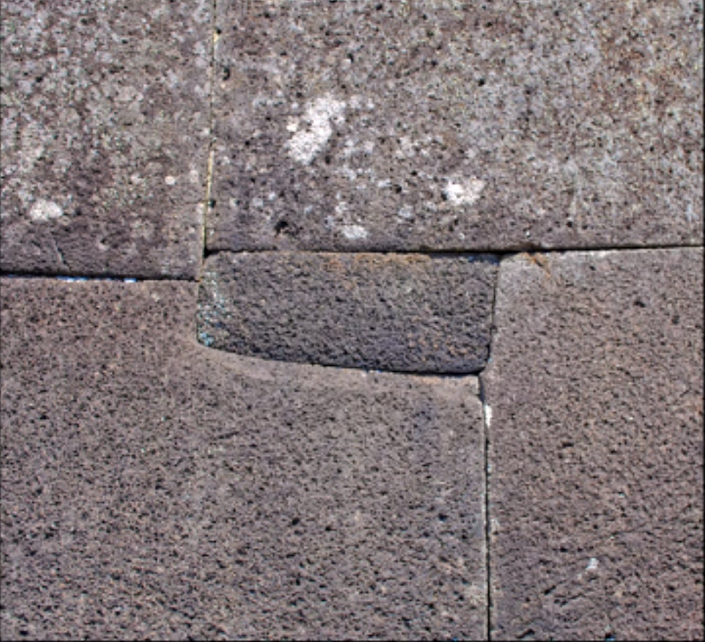
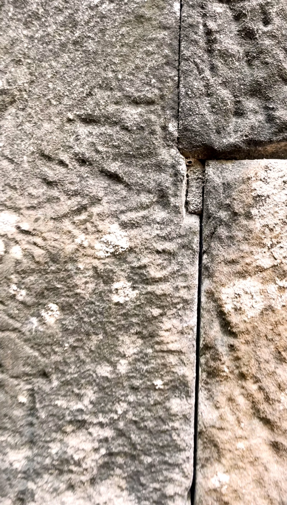
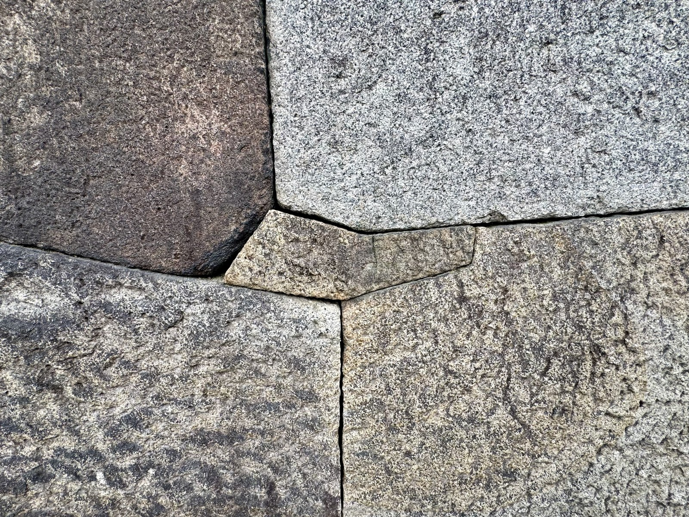
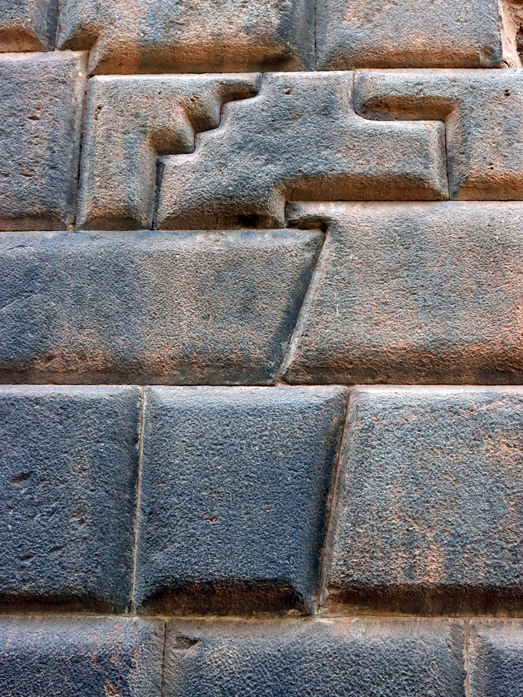
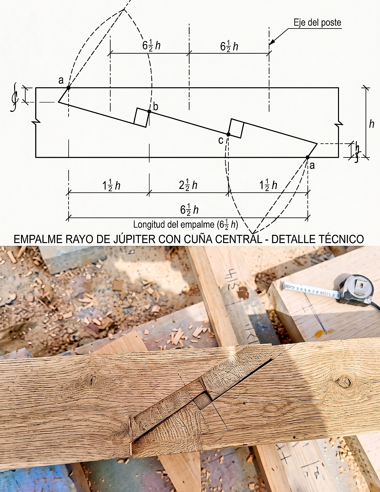
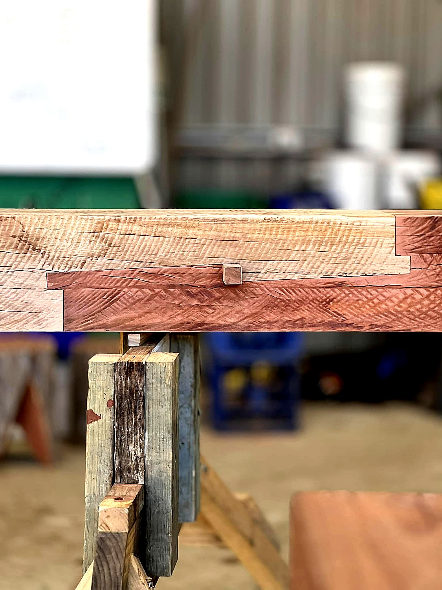

Why does a 100-ton wall need a hand-sized stone?
The mini-megalith paradox.
A wall built from blocks that weigh tons, fitted to razor-blade tolerance, does not need a patch. The geometry holds itself up.
So why are these walls full of small stones?
The same precision tradition that handles the impossible scale also handles the smallest fittings. A multi-ton block at Sacsayhuamán meets its neighbor along a kilometer of concave-convex joinery a knife blade cannot enter. Set into the seam, hidden until you know to look, sits a stone the size of a child's hand. Cut to the same standard. Fitted the same way. Not a repair. It belongs.
This entry is about that hand-sized stone.
Five sites. Four continents. The same paradox, in stone.
Osireion

Coricancha

Ahu Vinapu

Phnom Bok

Osaka Castle

The signature is not subtle once you know what to look for. Every one of these examples was found by a field observer who went looking. Each was undamaged, original, and load-bearing.
What do we call this thing?
The academic vocabulary has no clean answer. Egyptology has closure plugs. Andean studies use sopcho. Western drystone calls them pinning stones or spalls. Each term carries baggage from its native context : a plug closes a hole, a pinning stone wedges, a spall fills. None of them describes what is actually happening across these sites.
The insertions are not patches. Not wedges. Not gap-fillers worked around an irregularity. They are designed in from the start, cut to the same standard as the larger blocks, placed where the surrounding geometry seems to require. The field-observer term mini megalith is the most honest available. Descriptive. No commitment to function. It points at the phenomenon and asks the reader to consider that the same tradition responsible for the largest stones is also responsible for the smallest.
What mini megaliths are not
- Not repair work. The surrounding stones lock around them, which means the larger work was cut to accommodate them before placement.
- Not seismic patches added later. The cutting standard matches the original wall, not later work.
- Not decorative. Most are nearly invisible until pointed out.
- Not random. They appear at the same positions in the same kinds of joinery, on four continents.
A masonry tradition with the engineering range to handle 100-ton blocks at sub-millimeter tolerance uses the same tolerance to set stones the size of a child's hand. The intent is unmistakable. The function is not.
Anyone who carves a bent corner does not leave a gap by accident.
The same logic, at architectural scale.
If a hand-sized inset can be dismissed as decoration, what happens when the same tradition scales the principle up to the wall?
Cusco · stepped interlock

If the inset is a patch, this is a patch sized for a wall.
What does the standard actually look like?
To talk about mini megaliths honestly, the cutting standard around them has to be described accurately. The Peru Channel correctly notes that the stones along Calle Hatunrumiyoq are real andesite, that gaps exist between many blocks, and that the "dancing stones" earthquake mythology has no evidence behind it. The atlas applies these corrections.
The same writers also note, often without dwelling on it, that the masonry there is unlike anything else in Cusco. "There is no other place in Cusco where you can see anywhere close to this kind of masonry on such full display." That is the start of the puzzle, not the end.
Four properties define the standard.
1. Joints are not planar.
Mating surfaces are not flat planes pressed together. They are sculpted as compound curves : concave on one block, convex on the other, dressed to match. A flat plane is one constraint. A compound curve is a continuous family of constraints. The fact that both surfaces meet means the curves were cut to a shared geometry before the blocks ever met. And these are not soft stones. Granite, andesite, basalt, and quartz-cemented sandstone all sit near the top of the Mohs hardness scale.
2. Corners are not assembled.
Bent and re-entrant corners are sculpted into single parent blocks, not built from two stones meeting at an angle. The block carries the corner. The neighbor accepts it. The opposite of how a brick wall is built.
3. Tolerance is variable. Where tight, very tight.
Gaps exist. Centimeter and hand-width gaps appear at many joints across Cusco. The atlas takes this seriously. What also exists, on the same walls, are seams a credit card cannot enter for runs of a meter or more. Both observations are true at once. The presence of gaps does not negate the precision. The presence of precision does not erase the gaps. Any honest reading accounts for both.
4. The mini megalith is cut to the same standard.
This is the part that matters. The hand-sized stone in the seam is not a different kind of work. Its faces match the same curvature standard as the meter-scale blocks. Its bent corners are returned with the same precision. The surrounding blocks were cut to receive it. The L-step at the Osireion, the trapezoid socket at the Coricancha, the keystone notch in the Cusco zigzag interlock : all carved into the parent stones before placement. The mini megalith is part of the original geometry, scaled down.
Two readings sit on the table.
The mainstream reading. Skilled mid-14th-century Inca masons, with stone hammers and bronze tools, achieved this precision through enormous time and accumulated craft. The geopolymer hypothesis is rejected : the stones are real, with native quarry signatures confirmed by x-ray fluorescence.
The independent reading. The cutting standard, repeated across continents on stone at the upper Mohs band (granite, andesite, and quartz-cemented sandstone all 6 to 7, basalt 5 to 6), implies a transmitted technique rather than parallel convergent invention. None of these rocks shape easily. Sub-millimeter precision at hand-scale, in the same fabric as multi-ton precision at architectural scale, reads as evidence of a method that is not currently understood.
Both readings agree on the cutting standard. They disagree on the method. The mini megalith makes the disagreement harder to dismiss : the same standard appears at hand-scale, where time and craft stop feeling sufficient.
A cutting standard that survives at four orders of magnitude is the engineering question, not the mythology.
What could the mini megalith be for?
Six candidates sit on the table, followed by a seventh frame that reframes the question itself. Each must clear three bars : testable against the stone, accounts for the multi-site pattern, does explanatory work that simpler readings do not.
1. Pressure distribution
The mini as a load-balancing element : transferring pressure across a wider footprint, routing stress into the host stone.
The Coricancha keystone reads as a textbook load-transfer element : a trapezoid narrowing downward, locking the upper block against horizontal displacement. Many minis sit precisely at bent corners, the joints most vulnerable to stress concentration. But not all do. The fingertip-sized inset at Phnom Bok is too small for meaningful structural work at the wall scale.
Reading. Partial. Accounts for some larger minis. Not a general theory.
2. Seismic damping
The mini as a micro-movement element : allowing energy to dissipate through the joinery rather than fracturing host blocks.
The Andes is seismically active. The polygonal walls along Calle Hatunrumiyoq remain standing while the colonial structures built on top of them have collapsed and been rebuilt. But the Peru Channel correctly documents that the "dancing stones" mythology has no evidence. Inca walls show gaps and cracks. Major sections have collapsed. The minis are bonded to the parent geometry, not floating in damping space.
Reading. Oversold. Cannot be confirmed without instrumentation.
3. Acoustic tuning
The mini as resonance modulator : shaping the acoustic properties of the chamber or wall complex.
Several anchor sites have documented ceremonial function. Acoustic anomalies are noted at multiple megalithic sites. But no systematic peer-reviewed mapping has been done at the anchor sites. Correlation with ceremonial function does not establish design intent. The cross-continental pattern would require similar acoustic method applied independently on different rocks in unrelated cultures.
Reading. Intriguing. Awaits instrumentation. Currently unsupported.
4. Geopolymer signatures
The mini as artifact of multi-pour casting : the visible walls reconstituted material poured into molds.
Joseph Davidovits argued the Giza casing stones as a test case. Some extend the argument to Andean and other sites. But x-ray fluorescence and petrographic analysis at multiple Andean sites confirm native quarry signatures. The Cusco stones show spallation patterns characteristic of natural igneous rock. The Aswan granite at the Osireion carries the same signature as its source quarry 500 miles away, ruling out local casting.
Reading. The weakest of the six for the visible walls. May warrant investigation at specific sites. Not the general explanation.
5. Sacred mathematics
The mini placement encodes proportional or numerical relationships meaningful to the original builders. Golden ratio, megalithic yard, astronomical alignments.
Alexander Thom's megalithic-yard work established that early masonry can encode units of measurement with sub-millimeter consistency. Andean polygonal geometry shows clear proportional relationships. The Cusco stepped interlock (§02b) carries discrete step proportions that may carry encoded meaning. But pareidolia is the dominant risk. Many "patterns" are not statistically validated. Encoded "messages" remain speculative absent decoded keys.
Reading. Partial. Proportional design intent is supported. Specific meanings remain unproven. An archaeoastronomy program at the anchor sites is overdue.
6. Lost transmitted knowledge
A masonry tradition older than the mainstream chronology, transmitted across early-Holocene cultures, informs the cutting standard at all anchor sites.
The four-continent convergence is the central observation of this entry. The same technique (compound joints, sculpted corners, scaled-down minis cut to parent-block precision) appears on different rocks under different cultures at sites with no documented contact. But independent invention is well-documented. Convergent evolution of technique occurs. Transmission requires evidence of contact the archaeological record does not currently provide.
Reading. The only candidate that elegantly explains the cross-continental convergence. Lacks direct proof. The shape of the evidence keeps the hypothesis alive.
A different lens : the joint problem itself
The first six candidates all ask : what does the mini do? The seventh frame inverts the question : what is it about the joint problem that forces this geometry on anyone who solves it well?
Traditional timber framers, working independently in Europe, in Japan, and in North America, have developed an almost identical geometric vocabulary in wood : keyed scarf joints, splayed abutments, complementary precision cuts, hardwood wedges driven through the assembly to lock it. Francis Barnett's walkthrough of a keyed scarf joint in 8-inch oak shows the principle directly. The joint handles compression at the abutments, tension at the squinted faces, and shear along the long diagonal — all at once, through pre-designed precision cuts and a single locking key. No metal. No glue. The geometry is the engineering.


The mini megalith reads the same way. Both traditions reject the easy options (mortar, nails) in favor of pure geometry. Both require the builder to hold the complete final form in mind before the first cut. Both accept high upfront labor for centuries-long performance. Different materials, same constraint, same family of solutions.
The mini megalith reads less like cultural mystery and more like the inevitable answer to a joint problem any skilled builder eventually has to solve. The geometric vocabulary that emerges when you remove the option of fasteners is shaped by physics, not by culture. When the same vocabulary appears in stone walls on four continents and in timber framing across three, that is convergent engineering, not coincidence.
Reading. Strong on the engineering principle. Reframes the cross-continental convergence from a transmission puzzle to a material-constraint phenomenon. The mystery doesn't dissolve. It relocates : from history to engineering.
Frame submitted by a reader from a timber-framing background, who recognized the parallel from his own practice and sharpened the entry's central question.
No single candidate accounts for everything. Pressure distribution explains some shapes. Sacred mathematics explains some proportions. Transmitted knowledge explains the cross-continental signature. Seismic and acoustic readings remain unevidenced. Geopolymer is contradicted by petrography on the visible walls. The honest synthesis is that the mini megalith probably operates in more than one register, and the function the builders intended may not be cleanly recoverable from the geometry alone.
No single explanation accounts for all the evidence. That, in itself, is the evidence.
What does it mean that the same standard appears in four places at once?
The atlas is a map. The library is where the map's questions stay open. This entry has held one such question across the geometry, the photographs, and the candidates. Time to name it.
Why does the same cutting standard, at four orders of magnitude, on rocks at the upper end of the Mohs scale, appear across four continents whose cultures the archaeological record separates by oceans?
The mainstream reading explains each site locally. Skilled masons. Plenty of time. Accumulated craft. Internally consistent. Survives at any single site. What it does not explain is why the same technique emerged in Egypt, Peru, Easter Island, and Cambodia on different rocks under different cultures with no documented contact. The mainstream answer is convergent invention : separate cultures arriving independently at the same engineering solution. Possible. It also requires four cultures to have arrived at compound joinery, scaled-down minis, and the same proportional standard, by chance, on stones that fight back at every blow of the bronze tool.
The independent reading explains the convergence directly. A masonry tradition older than the mainstream chronology transmitted across cultures and across oceans, leaving its signature wherever it was practiced. Also internally consistent. Survives the cross-continental observation. What it lacks is direct archaeological proof of contact, which keeps it a hypothesis. The independent answer to that gap is that the contact occurred on a timescale and through a population the archaeological record has not yet recovered. Also possible. It also asks the reader to accept a model of human history that current academic chronology does not support.
Both readings are coherent. Both have to answer for something. Neither is complete.
The atlas does not need to collapse the question. What the atlas asks is that more eyes go looking.
You now know what to look for. Compound joints. Sculpted bent corners. Hand-sized stones cut to the same standard as the parent blocks, set where the blocks could not meet without them. The pattern appears at most polygonal masonry sites, often unphotographed, frequently unremarked, almost always intact. Most sites have not been systematically surveyed for them. Most published photographs of famous walls leave them out of frame.
That means real work for the field observer. Every visit to a megalithic site is a chance to find a new example. The Phnom Bok inset was found on the first wall the researcher inspected, in 2026, after she recognized the technique from her work in Peru and Egypt. The Osaka Castle keystone was found and photographed by a traveler in May 2025, on a wall millions of visitors have walked past without remarking. There is no reason to think these are the last.
The Osireion, the Coricancha, Ahu Vinapu, Phnom Bok, Osaka Castle, and the Cusco stepped interlock are open-question sites in the catalog, tagged with the criteria they raise, linked to the field researchers who have done the rigorous documentation : Praveen Mohan at the Osireion, UnchartedX in Cusco, Brien Foerster across the Andes, SOLSTICE HUNTER at Phnom Bok, Tim Bernsen at Osaka. Their walkthroughs and photographs are the model.
Go look at one of these walls when you get the chance. Look at the seam, not the block face. Look at bent corners. Look small. Bring a camera. Send what you find.
When you find yourself standing in front of one of these walls, look for the hand-sized stone. It is the question the wall is asking you.
Sources & further reading
- Phnom Bok mini megalith. Field observation by SOLSTICE HUNTER, Proof of Ancient Global Civilization — Finding Mini Megaliths at Phnom Bok, Cambodia, May 2026. YouTube.
- Osaka Castle mini megalith. Field photograph by Tim Bernsen at Osaka Castle Park, Osaka, Japan, May 21, 2025. The keystone-shaped inset locks the intersection of four parent blocks at the outer fortification wall. Photo credit Tim Bernsen.
- Osireion. Praveen Mohan walkthroughs of Abydos. UnchartedX comparative analyses. Beyond Legends photographic archive (image credit).
- Coricancha and Sacsayhuamán. UnchartedX walkthroughs of Cusco's polygonal masonry. Exploring Sacsayhuaman with Yousef Awyan, 2025.
- Cusco stepped interlock. Brien Foerster comparative field documentation. The interlock illustrated in §02b is a documented example of the same principle at architectural scale, found in multiple Cusco walls including Hatun Rumiyoc and the Coricancha complex.
- The Peru Channel (Philip). Cusco's 12-Angled-Stone : Reality and Mythology, September 2024. Mainstream-skeptic reference for §03 : pushes back on the "dancing stones" myth, the "razor-blade gap" claim, and the geopolymer hypothesis ; documents the green diorite sourcing and acknowledges the wall as without parallel in Cusco. Read at theperuchannel.com.
- Ollantaytambo. Brien Foerster field documentation, multiple expeditions. Referenced in §03 for the Sacsayhuamán comparison, not represented by a photograph in this entry.
- Ahu Vinapu. SOLSTICE HUNTER comparative survey footage. Praveen Mohan's Easter Island series.
- On joinery and structural locks. Standard masonry treatments of dovetail and keystone joints in Stone Masonry Conservation (Ashurst), and parallel uses in restorative archaeology.